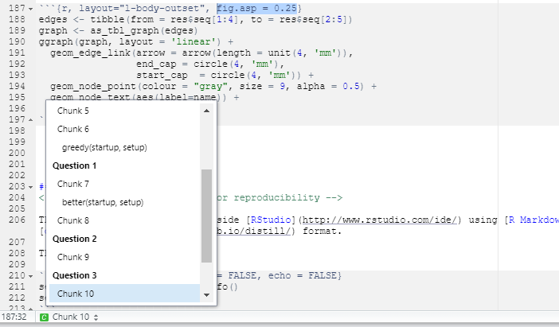

Module 6 Introduction to tidyverse and R Markdown
6.1 Learning outcomes
By the end of this module, you are expected to be able to:
- Describe what the tidyverse package is.
- Explain the ideas behind reproducible reports and literal programming.
- Create your first R Markdown document and add some code and text.
6.2 The tidyverse package
The tidyverse is an collection of R packages designed for data science. All packages share an underlying design philosophy, grammar, and data structures.
The core tidyverse includes the packages that you’re likely to use in everyday data analyses. In tidyverse 1.3.0, the following packages are included in the core tidyverse:
dplyr provides a grammar of data manipulation, providing a consistent set of verbs that solve the most common data manipulation challenges. We are going to use dplyr in Module 8.
ggplot2 is a system for declaratively creating graphics, based on The Grammar of Graphics. You provide the data, tell ggplot2 how to map variables to aesthetics, what graphical primitives to use, and it takes care of the details. We are going to use ggplot in Module 9.
tidyr provides a set of functions that help you get to tidy data. Tidy data is data with a consistent form: in brief, every variable goes in a column, and every column is a variable.
readr provides a fast and friendly way to read rectangular data (like csv, tsv, and fwf). It is designed to flexibly parse many types of data found in the wild, while still cleanly failing when data unexpectedly changes. We are going to use dplyr in Module 7.
purrr enhances R’s functional programming (FP) toolkit by providing a complete and consistent set of tools for working with functions and vectors. Once you master the basic concepts, purrr allows you to replace many for loops with code that is easier to write and more expressive. This package is not covered by this course.
tibble is a modern re-imagining of the data frame, keeping what time has proven to be effective, and throwing out what it has not. Tibbles are data.frames that are lazy and surly: they do less and complain more forcing you to confront problems earlier, typically leading to cleaner, more expressive code. We are going to use tibbles in Module 8.
stringr provides a cohesive set of functions designed to make working with strings as easy as possible. You have already worked a bit with stringr in Exercise 3.10.9
forcats provides a suite of useful tools that solve common problems with factors. R uses factors to handle categorical variables, variables that have a fixed and known set of possible values. This package is not covered by this course.
Small introductions (with examples) to the packages are given on their documentation pages (follow the links above). The tidyverse also includes many other packages with more specialized usage. They are not loaded automatically with library(tidyverse), so you’ll need to load each one with its own call to library().
6.3 Writing reproducible reports
The concept of literate programming was originally introduced by Donald Knuth in 1984. In a nutshell, Knuth envisioned a new programming paradigm where computer scientists focus on weaving code together with text as documentation.
That is, when we do an Analytics project, are we interested in writing reports containing both R code for importing data, wangling and analysis. Moreover, at the same time the document should contain our comments about the code, plots, analysis, results etc. The document is then rendered to an output format such as html, pdf or Word which is presented to the decision maker. Note the document can be seen as the “the source code” for the report communicated to the decision maker.
Some developers have created tools to enable others to write better literate programs. They use a markup language made for authoring. We are going to focus on R Markdown. In R Markdown documents you can weave R code together with text (written in Markdown) to produce elegantly formatted output.
In fact this book is written in R Markdown by using
- a set of R Markdown documents bound together as a collection using the bookdown package,
- rendered to a web-page using RStudio,
- shared on GitHub,
- built by GitHub Actions,
- and published on GitHub Pages.
This may seem complicated at first. However, after setup it has made life much easier since
- we can update the book easier,
- share and collaborate on the book easier,
- update the web-page automatically,
- keep history of the book source.
- and keep the book source at a single location.
R Markdown documents are reproducible. Anybody who works with data has at some point heard a colleague say ‘Well, it works on my computer’, expressing dismay at the fact that you cannot reproduce their results. Ultimately, reproducible means that the results can be reproduced given access to the original data, software, and code. In practice it may be hard to make your project totally reproducible. For instance, people may be using a different operating system, other versions of the software etc. That is, there are different levels of reproducibility. In this course we will focus on R Markdown only. See Section 6.4 for more info.
An introduction to R Markdown is given in the Chapters 3 and 4 of the Datacamp course Communicating with Data in the Tidyverse. Note that you may skip Chapters 1 and 2 and still understand mostly of the questions in Chapters 3 and 4 (otherwise just see the solution). You are expected to have completed the chapters before continuing this module!
6.4 Different learning paths
We are all different and you may like different learning styles compared to others. As a result you may prefer a different learning path than suggested. Here is a list of possible different learning paths that may be usefull for you.
- Chapter 4 in Ismay and Kennedy (2019) gives an overview over R Markdown with videos included.
- You may also do the interactive DataCamp Reporting with R Markdown which is a bit longer than the suggested course.
- If Help > Markdown Quick Reference not is enough then try out this interactive markdown tutorial.
- The R Markdown cheatsheet may be useful. Find the newest version in RStudio Help > Cheatsheets.
- Glenn Moncrieff gives a nice detained overview on how to create reproducible projects.
- If you are interested in trying Git and GitHub out see Bryan, STAT 545 TAs, and Hester (2020) for detailed help.
- All chunk options for R code can be seen here.
6.5 Recap
The tidyverse is an collection of R packages designed for data science. All packages share an underlying design philosophy, grammar, and data structures.
R Markdown is an example of literate programming.
The core tidyverse includes the packages that you’re likely to use in everyday data analyses.
The concept of literate programming is a programming paradigm which focus on weaving code together with text as documentation. That is, we are interested in writing reports containing both text and R code for importing data, wangling and analysis.
Reproducibility means that the results can be reproduced given access to the original data, software, and code.
In practice it may be hard to make your project totally reproducible. That is, there are different levels of reproducibility.
R Markdown documents are a attempt to make reproducible documents and combine R code and markdown text.
6.6 Exercises
Below you will find a set of exercises. Always have a look at the exercises before you meet in your study group and try to solve them. Are you stuck that see the help page. Solutions to each exercise can be seen by pressing the button at each question. Beware you will not learn by giving up to early. Put some effort into finding a solution!
6.6.1 Exercise (your first R Markdown exersise)
Load the tfa package:
# remotes::install_github("bss-osca/tfa/tfa-package") # if not installed
library(tfa)The package contains templates for exercises etc. Go to File > New File > R Markdown…. In the pop-up box select From template in the left column and then TFA Exercise. Press Ok and a new R Markdown document will be opened.
Change the meta text (e.g. the title and add your name) in the yaml.
Render/compile the document by pressing the Knit button (or Ctrl+Shift+K).
- Change
echo = TRUEtoecho = FALSEin the first chunksetupand render the document. What have happened?
You can easily go to a chunk using the navigation in bottom left of the source window.

Try to change
fig.asp = 0.25to e.g. 0.5 in Chunk 10. What happens?Create a new section `
## Question 4and add text in italic: What is the sum of all setup costs?
- Add a code chunk solving Question 5 above.
- Add a line of text with the result.
References
Bryan, J., the STAT 545 TAs, and J. Hester. 2020. Happy Git and Github for the useR. https://happygitwithr.com/.
Ismay, C., and P. C. Kennedy. 2019. Getting Used to R, Rstudio, and R Markdown. https://rbasics.netlify.app.